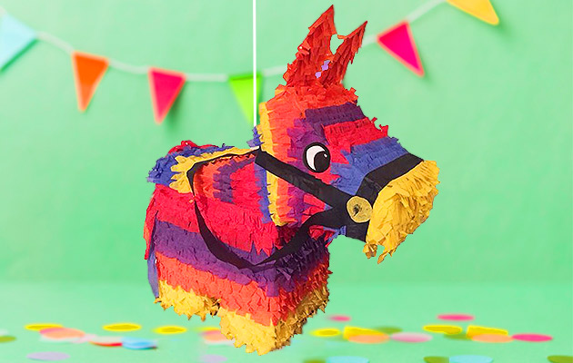

Conoce Sobre Nuestras Piñatas

45 Años de Experiencia
Uno de los elementos más típicos de las celebraciones en México son las piñatas, símbolo reconocido internacionalmente de la cultura mexicana. Sería difícil imaginar las posadas sin estas coloridas decoraciones originalmente hechas de barro, rellenas de frutas de temporada como tejocote, jícama, lima, caña de azúcar, mandarina, naranja así como cacahuates y diversas variedades de dulces.
Es precisamente en el mes de diciembre y en el marco de las posadas, cuando se aprecia mejor esta histórica tradición en México.